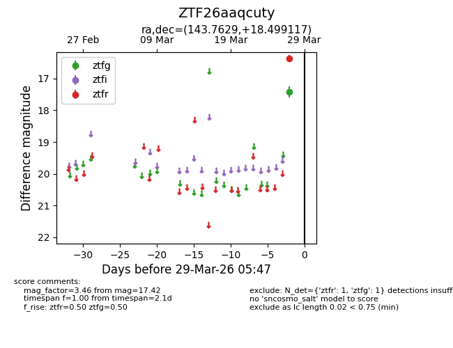
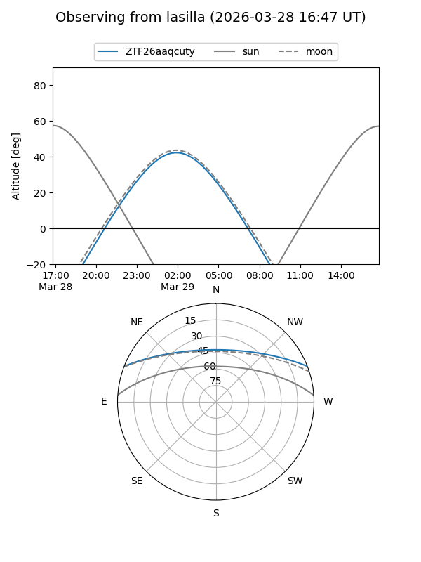
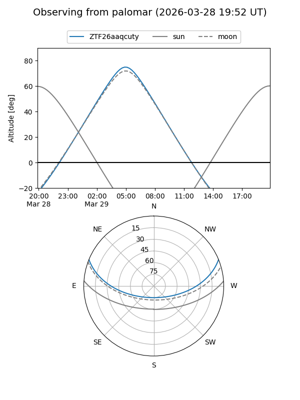

ZTF26aaqcuty
Target ZTF26aaqcuty at 2026-03-29 05:50
Aliases and brokers:
FINK: link
Lasair: link
ALeRCE: link
alt names
ZTF26aaqcuty (ztf,fink_ztf)
Coordinates:
equatorial (ra, dec) = 143.7629,+18.49912
equatorial (HMS+DMS) = 09:35:03.10,+18:29:56.82
galactic (l, b) = (212.9927,+44.21232)
Flags:
Photometry:
last ztfg=17.42, ztfr=16.37
1 ztfg, 1 ztfr detections
Lightcurve

Visibility


Additional plots